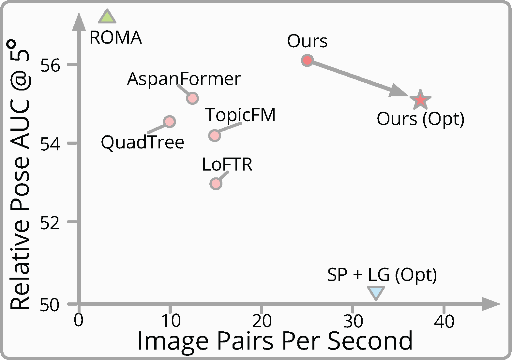

Abstract
Our interactive real-time demo matching images at 640$\times$480 resolution on RTX 4090.
 We present a novel method for efficiently producing semi-dense matches across images. Previous detector-free matcher LoFTR has shown remarkable matching capability in handling large-viewpoint change and texture-poor scenarios but suffers from low efficiency. We revisit its design choices and derive multiple improvements for both efficiency and accuracy. One key observation is that performing the transformer over the entire feature map is redundant due to shared local information, therefore we propose an aggregated attention mechanism with adaptive token selection for efficiency. Furthermore, we find spatial variance exists in LoFTR's fine correlation module, which is adverse to matching accuracy. A novel two-stage correlation layer is proposed to achieve accurate subpixel correspondences for accuracy improvement. Our efficiency optimized model is $\sim 2.5\times$ faster than LoFTR which can even surpass state-of-the-art efficient sparse matching pipeline SuperPoint + LightGlue. Moreover, extensive experiments show that our method can achieve higher accuracy compared with competitive semi-dense matchers, with considerable efficiency benefits. This opens up exciting prospects for large-scale or latency-sensitive applications such as image retrieval and 3D reconstruction.
Pipeline overview

\(\textbf{Pipeline Overview.}\) \((\textbf{1})\) Given an image pair, a CNN network extracts coarse feature maps $\tilde{\textbf{F}}_A$ and $\tilde{\textbf{F}}_B$, as well as fine features. \((\textbf{2})\) Then, we transform coarse features for more discriminative feature maps by interleaving our aggregated self- and cross-attention $N$ times, where adaptively feature aggregation is performed to reduce token size before each attention for efficiency. \((\textbf{3})\) Transformed coarse features are correlated for the score matrix $\mathcal{S}$. Mutual-nearest-neighbor~(MNN) searching is followed to establish coarse matches $\{\mathcal{M}_c\}$. % Simple version \((\textbf{4})\) To refine coarse matches, discriminative fine features $\hat{\textbf{F}}_A^t$, $\hat{\textbf{F}}_B^t$ in full resolution are obtained by fusing transformed coarse features $\tilde{\textbf{F}}_A^t$, $\tilde{\textbf{F}}_B^t$ with backbone features. Feature patches are then cropped centered at each coarse match $\mathcal{M}_c$. A two-stage refinement is followed to obtain sub-pixel correspondence $\mathcal{M}_f$.
Qualitative comparison with ASpanFormer and SuperGlue
Data is captured using an iPhone, color indicates the match confidence.
Citation
@inproceedings{wang2024eloftr,
title={{Efficient LoFTR}: Semi-Dense Local Feature Matching with Sparse-Like Speed},
author={Wang, Yifan and He, Xingyi and Peng, Sida and Tan, Dongli and Zhou, Xiaowei},
booktitle={CVPR},
year={2024}
}